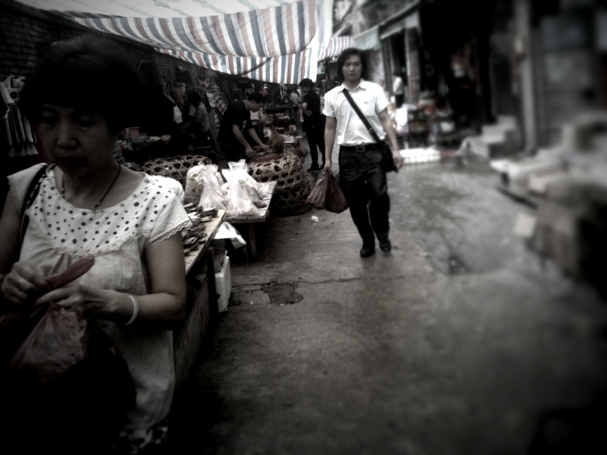
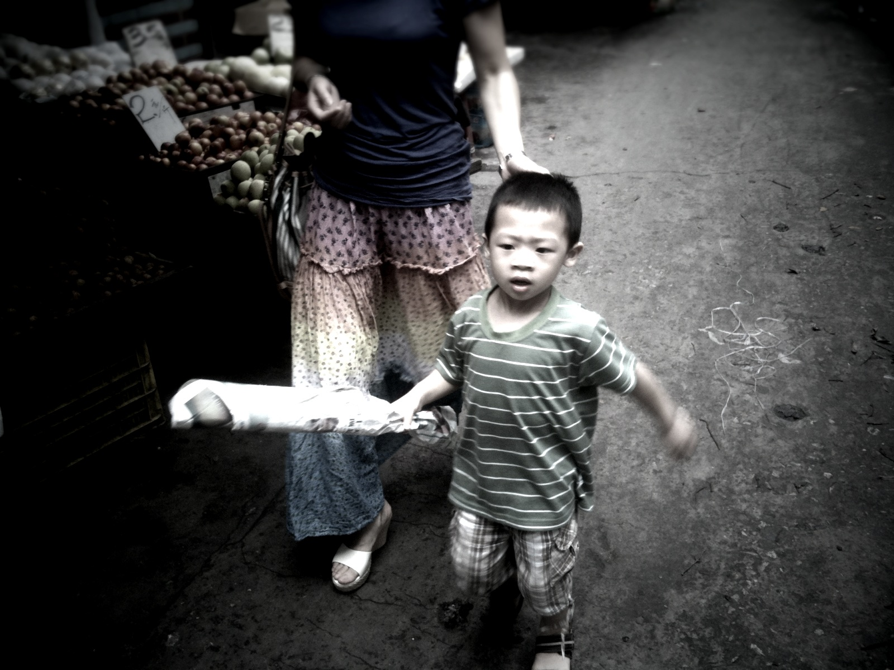

我住在CBD里面，满眼都是富力的楼盘，拗口的地产名每每让出租车司机找不着北。广州就是这样，远离政治中心浓郁的岭南文化氛围能从支言片语的白话中有所体会。从立交桥交织的空隙中看起伏的城际线，那种毫无道理的现代感，让人无奈。
常常从这个地带经过，好奇打探这个跟周围格格不入的城中村，人黝黑爱赤裸，本是社区宣传窗的展板都被贴满了反对打倒等愤怒的语言，加上对撕毁招贴者的诅咒，以及擦也擦不去的、瓷砖上硕大的「不拆」二字。
像个森林的外围，满是荆棘和焦灼的黑泥，每一寸都是静默的挣扎和愤怒。吊诡的是，满处可见祖国万岁，XX万岁的口号，这些生活在广州最最底层的人们，缺乏法律的保障，使用一种无力的纯真策略，让人生怜悯。

村子里窄巷四通八达，房屋挤压空隙，不进阳光，空气中弥漫着腐臭的潮气；深巷中充满仿制品的杂货铺和无人问津的中医诊所，那些令人生恶的皮肤病展板随机出现；腥红肉板后消瘦肉铺老板无精打采的眼神；泥水里混着从天而降的女性内衣裤；多年前流行的公话超市在这里能见到多处，长途电话的格子里是听不懂的语言；所有的墙壁上张贴着出租物的广告，时常有穿着短裙、和这个环境格格不入的女子从单元房里走出，带着难以描绘的神色。
纽约布鲁克林区从破败中滋生的那种骄傲，冼村是否有一天也能诞生Woody Allen和Larry King，像布鲁克林那样成为纽约传奇的元叙事。也许就在这个城中村的某处，有个与众不同的孩子，从小在这样的泥水和腐烂中长大，却有着不一样的想法。
我害怕的，是某天他会跟随他妥协的父辈，手揣一笔不菲的拆迁款，住进了千篇一律的住宅楼，那曾在腐水和垃圾中滋生的彩色梦想，悄无声地被这座渐渐平庸的城市漂白。随之而来的也必是有一天，冼村和它的故事消失得无影无踪。
周围的高档小区和顶级写字楼霸道地肆意生长，包裹并侵蚀着这个村落，冼村则用自己的方式，顽强生存着。它已知道自己的归宿，无奈地走向那一天。
